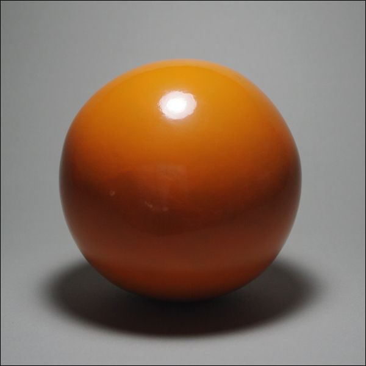

1. Boas-vindas e a Trilha do Photoshop
Este curso de Adobe Photoshop foi dividido em 8 graus, do iniciante absoluto até o uso avançado da ferramenta. Você está começando pelo Grau 1: conhecer a tela, entender onde fica cada coisa, e fazer três exercícios práticos de verdade.
| Grau | Tema | Situação |
|---|---|---|
| 1 | Conhecendo a ferramenta | ✅ Você está aqui |
| 2 | Seleções e camadas avançadas | 🔒 Em breve |
| 3 | Ajustes de cor e retoque | 🔒 Em breve |
| 4 | Texto, formas e composição | 🔒 Em breve |
| 5 | Efeitos e filtros criativos | 🔒 Em breve |
| 6 | Composição avançada | 🔒 Em breve |
| 7 | Projeto final integrador | 🔒 Em breve |
| 8 | Auras e efeitos de invocação | 🔒 Em breve |
2. Objetivo do Grau 1
Ao final deste guia você vai ser capaz de:
- Abrir o Photoshop e criar um documento novo
- Reconhecer as áreas principais da tela: menus, opções, ferramentas, painéis e a área de trabalho
- Inserir uma imagem sua no documento
- Recortar (cortar) a imagem do jeito que você quiser
- Remover o fundo de uma foto, por dois caminhos diferentes
- Salvar o resultado no formato certo
📷 Sobre a imagem que você vai usar
Não existe uma imagem "oficial" do exercício — use qualquer foto sua, de um objeto, de um animal de estimação, o que preferir. O importante é praticar o caminho, não o resultado final.
3. O que é o Photoshop?
O Adobe Photoshop é o programa de edição de imagens mais usado do mundo, feito pela Adobe. Ele trabalha com imagens raster (formadas por pixels, como fotografias) e permite editar, retocar, montar e criar artes do zero.
Para que ele é usado no dia a dia
| Uso | Exemplo |
|---|---|
| Tratamento de fotos | Ajustar cor, brilho, remover imperfeições |
| Design gráfico | Artes para redes sociais, banners, cartazes |
| Montagens | Combinar várias imagens em uma só composição |
| Remoção de fundo | Preparar produtos para catálogos e e-commerce |
4. Um Documento Novo
Tudo começa com um documento em branco (ou com a sua foto já aberta).
Criando do zero
2. Ou o atalho Ctrl + N
3. Escolha um tamanho (ex: 1000 x 1000 px) e clique em Criar
Abrindo uma foto existente
2. Ou o atalho Ctrl + O
3. Selecione o arquivo da sua foto e clique em Abrir
5. Panorama da Tela
Antes de clicar em qualquer coisa, vale reconhecer as 5 áreas fixas da tela do Photoshop. O diagrama abaixo é um mapa simplificado — ele não é uma captura real do programa, mas mostra exatamente onde cada área fica.
Ferramentas
(Camadas, Cor...)
Diagrama ilustrativo do layout — as cores e proporções reais variam por versão do Photoshop.
6. A Barra de Menus 1
Fica na linha mais alta da janela. É onde ficam os comandos organizados por categoria.
| Menu | Para que serve |
|---|---|
| Arquivo | Novo, Abrir, Salvar, Exportar, Colocar Incorporado |
| Editar | Desfazer, Copiar, Colar, Preferências |
| Imagem | Tamanho da imagem, Tamanho da tela, Ajustes de cor |
| Camada | Nova camada, Máscara de camada, Mesclar |
| Selecionar | Selecionar tudo, Inverter seleção, Desmarcar |
| Janela | Mostrar ou esconder qualquer painel (Camadas, Histórico...) |
7. Caixa de Ferramentas — Seleção e Movimento 3
É a coluna de ícones à esquerda da tela. Passar o mouse sobre qualquer ícone mostra o nome da ferramenta e o atalho de teclado.
Ícones ilustrativos — o desenho real de cada ícone varia por versão, mas a posição e o atalho são estáveis.
🖱️ Como usar a Seleção Rápida
Clique e arraste sobre a área que você quer selecionar — o Photoshop detecta bordas automaticamente e "gruda" na forma do objeto. É a base da remoção de fundo manual, que você vai praticar mais adiante.
8. Caixa de Ferramentas — Corte, Pintura e Zoom
Cores de frente e fundo
Bem embaixo da caixa de ferramentas ficam dois quadradinhos sobrepostos: o de cima é a cor de frente (o que o Pincel pinta) e o de baixo é a cor de fundo. Clicar na setinha pequena troca as duas de lugar — atalho X.
9. A Barra de Opções 2
Fica logo abaixo da Barra de Menus, e é contextual: o conteúdo dela muda de acordo com a ferramenta selecionada na Caixa de Ferramentas.
| Ferramenta ativa | O que aparece na Barra de Opções |
|---|---|
| Seleção Retangular | Modo de seleção, suavização de borda (feather) |
| Corte | Proporção (livre, quadrado, 16:9...), sobreposição de grade |
| Pincel | Tamanho, dureza, opacidade do traço |
10. O Painel de Camadas 5
Pense em camadas como folhas de papel vegetal empilhadas: cada imagem, texto ou forma fica em sua própria folha, e você pode mostrar, esconder ou reorganizar cada uma sem afetar as outras.
Painel ilustrativo — clicar no ícone do olho 👁️ esconde/mostra a camada; o "+" cria uma camada nova; a lixeira apaga a selecionada.
11. Zoom e Navegação
| Ação | Atalho |
|---|---|
| Aumentar zoom | Ctrl + + |
| Diminuir zoom | Ctrl + - |
| Ajustar imagem à tela | Ctrl + 0 |
| Mover a imagem na tela | Segurar Espaço e arrastar |
| Zoom rápido | Rodar a roda do mouse com Alt pressionado |
12. Prática 1 — Inserindo e Ajustando uma Imagem

⬇ Baixar imagem de prática — fundo liso, ótima para praticar recorte e remoção de fundo sem complicação.
{kind=link}
Passo 1 — Inserir a imagem
2. Escolha a sua foto e clique em Colocar
Alternativa: arraste o arquivo da foto direto para dentro da janela do Photoshop
Passo 2 — Ajustar o tamanho
2. Segure Shift e arraste um dos cantos para manter a proporção
3. Pressione Enter para confirmar
13. Prática 2 — Recortando a Imagem
A ferramenta Corte (tecla C) recorta a imagem para o tamanho que você quiser.
A área escurecida some do resultado final; a área clara dentro das alças brancas é o que fica.
2. Arraste as bordas/cantos que aparecem sobre a imagem
3. Na Barra de Opções, escolha uma proporção fixa se quiser (ex: 1:1, 16:9)
4. Pressione Enter para aplicar o corte
14. Prática 3 — Removendo o Fundo
O quadriculado cinza/branco é o símbolo universal de transparência (fundo removido).
Caminho rápido (versões recentes)
2. Abra o painel Propriedades (Janela → Propriedades)
3. Clique no botão Remover Plano de Fundo
Caminho manual (todas as versões)
2. Menu Selecionar → Inverter (para selecionar o fundo em vez do objeto)
3. Tecla Delete para apagar o fundo selecionado
4. Ctrl + D para desmarcar a seleção
15. Salvando o Trabalho
| Formato | Quando usar |
|---|---|
| .PSD | Arquivo de trabalho do Photoshop — mantém as camadas separadas e editáveis. Use para continuar editando depois. |
| .PNG | Suporta transparência. Ideal para a foto sem fundo do exercício 3. |
| .JPG | Não suporta transparência, mas gera arquivos menores. Bom para fotos comuns, com fundo. |
Para exportar a imagem final: Arquivo → Exportar → Exportar Como... → PNG ou JPG
16. Atalhos Essenciais — Cola Rápida
Uma referência rápida com todos os atalhos usados neste guia, para consultar depois sem precisar reabrir cada capítulo.
| Atalho | Ação |
|---|---|
| Ctrl+N | Novo documento |
| Ctrl+O | Abrir arquivo |
| Ctrl+T | Transformação livre (redimensionar/girar) |
| V | Ferramenta Mover |
| M | Seleção Retangular |
| L | Laço |
| W | Seleção Rápida |
| C | Corte (Crop) |
| B | Pincel |
| E | Borracha |
| Z | Zoom |
| X | Trocar cor de frente/fundo |
| F7 | Mostrar/esconder painel de Camadas |
| Ctrl+D | Desmarcar seleção |
| Ctrl+0 | Ajustar imagem à tela |
| Ctrl+Z | Desfazer |
17. Erros Comuns de Quem Está Começando
Use Ctrl + Z quantas vezes precisar. Cada aperto volta uma ação.
Provavelmente a ferramenta ativa é o Balde de Tinta, não o Pincel — ou o tamanho do pincel está gigante. Confira o nome da ferramenta na Barra de Opções antes de clicar.
Confira se a camada certa está selecionada no painel de Camadas — o Delete só afeta a camada ativa (destacada em azul).
Esperado: JPG não suporta transparência. Exporte em PNG quando precisar manter o fundo removido.
18. Checklist Final e Próximos Passos
✓ Antes de encerrar o Grau 1, confirme:
- ✅ Criei um documento novo (ou abri uma foto existente)
- ✅ Reconheço as 5 áreas da tela do Photoshop
- ✅ Inseri e redimensionei uma imagem
- ✅ Recortei a imagem com a ferramenta Corte
- ✅ Removi o fundo de uma foto (rápido ou manual)
- ✅ Salvei um .PSD e exportei um .PNG/.JPG